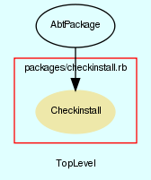

|  |
checkinstall.rb
Checkinstall package.
Created by Eric D. Schabell <erics@abtlinux.org> Copyright 2008, GPL.
This file is part of AbTLinux.
AbTLinux is free software; you can redistribute it and/or modify it under the terms of the GNU General Public License as published by the Free Software Foundation; either version 2 of the License, or (at your option) any later version.
AbTLinux is distributed in the hope that it will be useful, but WITHOUT ANY WARRANTY; without even the implied warranty of MERCHANTABILITY or FITNESS FOR A PARTICULAR PURPOSE. See the GNU General Public License for more details.
You should have received a copy of the GNU General Public License along with AbTLinux; if not, write to the Free Software Foundation, Inc., 51 Franklin St, Fifth Floor, Boston, MA 02110-1301 USA
Constructor for an AbtPackage, requires all the packge details.
PARAM Hash - hash containing all pacakge data.
[ show source ]
# File packages/checkinstall.rb, line 73
73: def initialize()
74: super($packageData)
75: end
Override configure by returning true, none needed.
PARAM boolean - true if you want to see the verbose output, otherwise false. Defaults to true.
RETURNS: boolean - True always.
[ show source ]
# File packages/checkinstall.rb, line 85
85: def configure(verbose=true)
86: return true
87: end
All files to be installed are installed here, note without installwatch, as we are installing it!
PARAM boolean - true if you want to see the verbose output, otherwise false. Defaults to true.
RETURNS: boolean - True if the completes sucessfully, otherwise false.
[ show source ]
# File packages/checkinstall.rb, line 99
99: def install(verbose=true)
100: if (verbose)
101: command = "make install"
102: else
103: command = "make install >/dev/null"
104: end
105:
106: Dir.chdir("#{$BUILD_LOCATION}/#{@srcDir}")
107:
108: if !system(command)
109: puts "[AbtPackage.install] - pre-install section failed, exit code was #{$?.exitstatus}."
110: return false
111: end
112:
113: if (verbose)
114: command = "installwatch --transl=no --backup=no " +
115: "--exclude=/dev,/proc,/tmp,/var/tmp,/usr/src,/sys " +
116: "--logfile=#{$ABT_TMP}/#{@srcDir}.watch make install"
117: else
118: command = "installwatch --transl=no --backup=no " +
119: "--exclude=/dev,/proc,/tmp,/var/tmp,/usr/src,/sys " +
120: "--logfile=#{$ABT_TMP}/#{@srcDir}.watch make install >/dev/null"
121: end
122:
123: Dir.chdir("#{$BUILD_LOCATION}/#{@srcDir}")
124:
125: if !system(command)
126: puts "[AbtPackage.install] - install section failed, exit code was #{$?.exitstatus}."
127: return false
128: end
129:
130: puts "[AbtPackage.install] - install section completed, exit code was #{$?.exitstatus}!" if (verbose)
131: return true
132: end